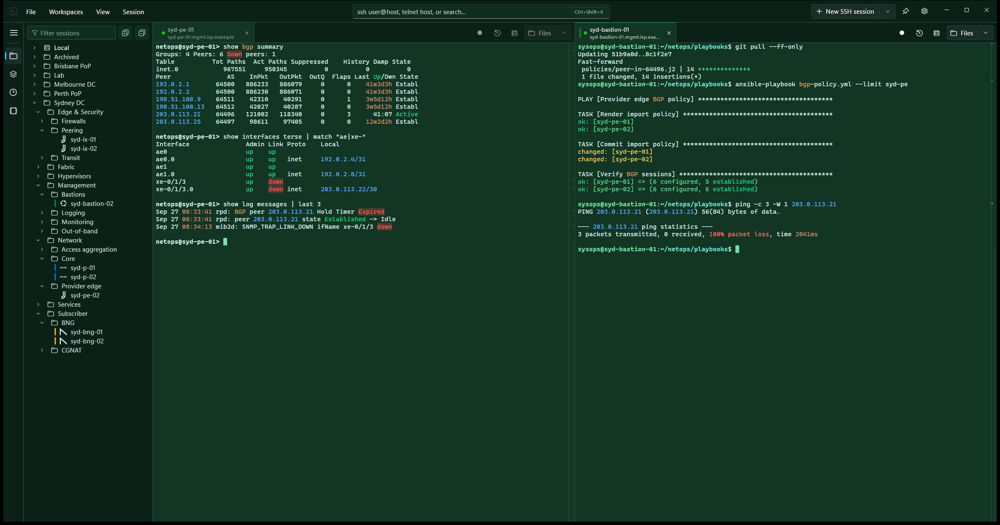
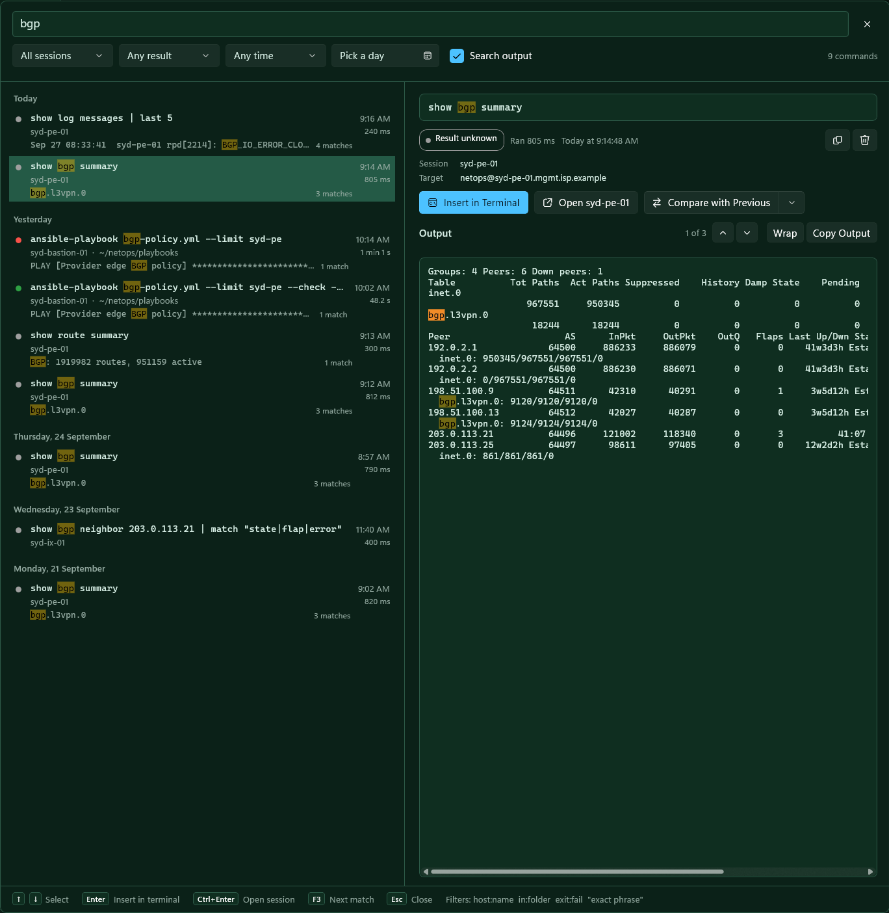
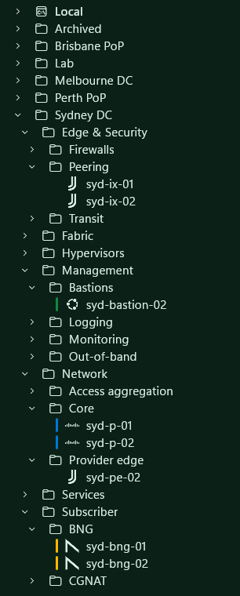
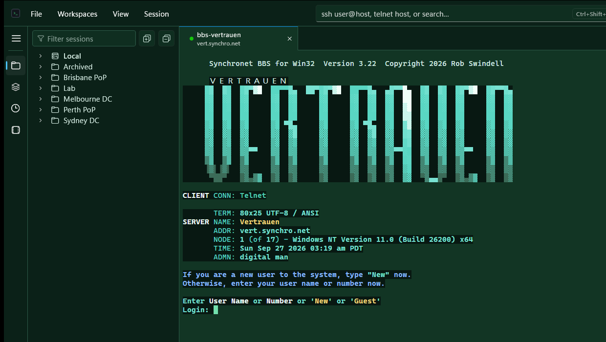

keep your hosts in folders and open terminals side by side. resesh can also keep every command you run, with its output, so you can find it and compare it weeks later.

hosts in folders, with icons and colour tags. filter the list and press enter to connect.
search every command and its output across all hosts. compare two runs of the same command.
tabs and split panes with live status. save a layout and reopen it for the next job.
remote hosts, console servers, powershell, cmd, wsl and git bash in one list.
turn on command history and resesh keeps each finished command with its output, host, folder, time and exit result. search all of it from one place, then put the command back at a prompt or reopen the session it ran in.

run the same check twice and resesh can put the two outputs side by side. counters and timestamps that always move can be ignored, so the change that matters is the only thing left: here, one bgp peer that dropped to active.

group sessions in folders and give each one a name, icon and colour. open them in tabs or split panes, then save the tabs, pane sizes and positions as a named workspace for the next maintenance window.
coding agents on a remote host behave the way they do in a local terminal. tabs show when an agent is working or waiting for you.

telnet sessions share the session list, tabs, splits, highlighting, history and recordings with ssh. the window size follows the tab, and send break works through a console server.
rewind shows the terminal as it was minutes ago while the session keeps running, then returns to live. turn on recording to keep an asciicast file for playback and a text log you can search.
winui 3 and .net 10 for the app, libghostty-vt and direct2d for the terminal, ssh.net for the transport. the numbers below were measured while building it.
import saved ssh and telnet sessions from securecrt, putty or openssh. review the list and choose which sessions to add. passwords are not imported.
free and open source. no account required.
anything missing, open an issue on github.